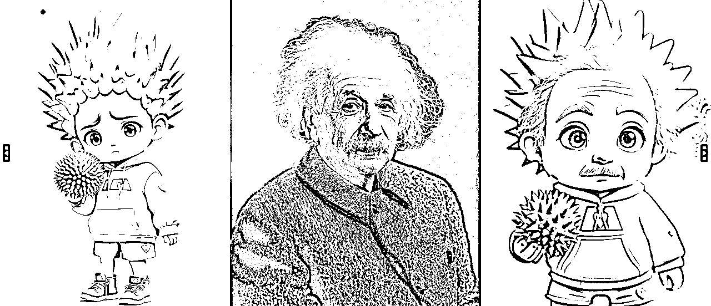

来源：https://qnc80j2zlx.feishu.cn/docx/FKh8dlbU0orgFDxyBZ6cJgbUnNw
今天继续分享工作流，这套工作流用的好，完全可以让你开启定制头像的副业，核心利用了Redux风格迁移+PuLID换脸功能，有两种方案，直接让你超神，实现头像风格自由。
两种实现方案，都是用Redux+PuLID，但是逻辑有些不同。
先来看一下工作流完整截图
在Flux文生图的基础上，额外加上了Redux和PuLID换脸模块，第一种方案里面是只提供一张换脸的图，同时接入到Redux和PuLID中，Redux中这个权重很关键，不同权重下生成的图片效果是不一样的。
下面我们直接来看案例
1boy, fullbody, 3d blind box style, wearing Santa Claus costume, wearing Santa hat, vibrant Christmas style background with soft lighting for ultra HD rendering, Christmas tree, Christmas gift box, red_shoes, emphasizing the character's lively personality and Christmas atmosphere, night, very aesthetic, aesthetic
人像用爱因斯坦
下面分别是风格化权重 medium、low、lowest、禁用
这四种状态下的对比，我个人比较喜欢medium这种感觉，更多的参考原图，再和提示词做结合。
想要其他不同的风格，直接替换不同的lora就好，下面我提供了几个不同的lora，提示词只要稍微写一下即可，在Redux medium权重影响下，提示词是可以直接起作用的，我们可以不写，或者只写出发lora的提示词即可。
像素风的lora
：pixel art, 1man, portrait, looking to the viewer

卡通动漫风格
Flat colour anime style image showing

水墨风格
minimalism,Chinese ink painting,ink painting ,portrait,1 man

上面这些原理都是先利用Redux提取图片的部分风格，然后再结合提示词，再加上换脸，这样就可以做出和人像很接近的风格图片了。

这种方案，不需要lora，也不需要提示词，直接找一张风格图像当做参考，实现换脸的操作
我这套流比别人的强了不是一点半点，经过多次微调，得出了最佳的人脸迁移效果
直接上图看效果吧，左边是风格参考图，中间是人脸图，右边就是迁移后生成的图。

这种效果我感觉已经非常酷了，大家觉得呢
以上就是这两种换脸风格头像工作流的介绍，基于Redux的功能开发还在继续，好东西还多着呢。
技术的迭代是飞快的，要关注最新的消息才不会掉队。
关注我，每天分享最新的ComfyUI技术前沿。
Redux+PuLID百变风格工作流
网盘链接：https://pan.quark.cn/s/67c54cae3df3
海艺平台上也封装了在线体验版，大家可以免费体验：
https://www.seaart.me/zhCN/workFlowAppDetail/cth342le878c73cr9jug